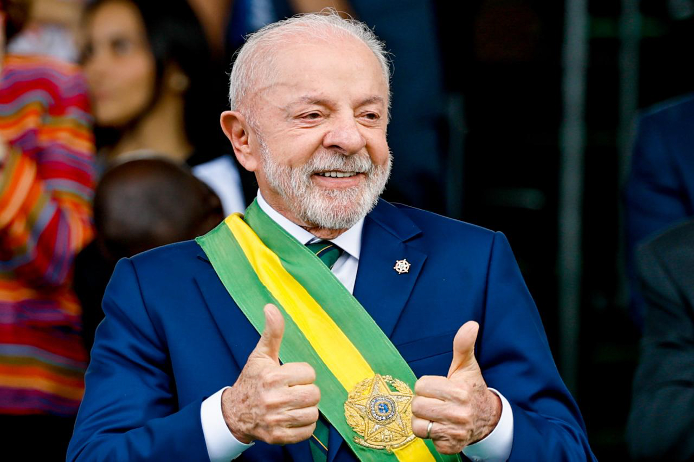

Lula pledges fiscal responsibility and lower interest rates but offers no concrete measures
In his first televised address since reelection, Brazil's president acknowledges concerns about public debt and defends investment and social programs.

What happened
In a nationally broadcast radio and television address on Sunday evening, November 8, 2026, President Luiz Inácio Lula da Silva said he was concerned about the trajectory of public debt and high interest rates. He reiterated his commitment to fiscal responsibility and said his government would seek to create conditions for lower interest rates, without unveiling a specific package of spending cuts or revenue measures. He also advocated expanding investment, including private-sector partnerships, while maintaining social policies. This was his first nationwide address since his October 25 reelection. Brazil's Central Bank had kept its benchmark Selic rate at 13.75% a year on November 4. Reports published that evening by Folha de S.Paulo, UOL and R7 corroborated the main points of the speech.
The Crow's analysis
The address attempted to reconcile two objectives that can pull in different directions: reassuring investors about the sustainability of public finances and maintaining commitments to social programs and investment. A pledge to create conditions for lower rates is not a decision by Brazil's independent Central Bank, which sets the Selic according to inflation conditions and expectations. Without operational targets, a timetable or financing details, the speech establishes a political direction but does not yet make its fiscal effects measurable. Attention now turns to proposals the economic team may present after the president's trip to Turkey.
Counterpoint
A commitment to fiscal discipline may signal willingness to contain debt and uncertainty, but economists and political opponents can reasonably demand figures, instruments and deadlines. Supporters of social spending argue that indiscriminate cuts also carry economic and social costs. The address alone does not establish that debt or interest rates will fall; outcomes depend on actual measures, Central Bank decisions and economic conditions.